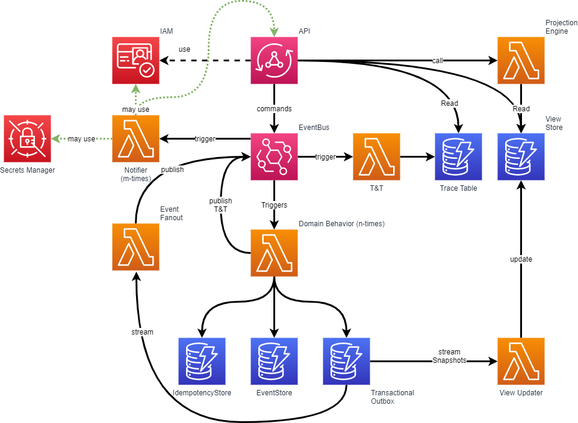

Technical Architecture#

This diagram outlines the following components and interactions and visualizes the technical architecture to where the model is converted to:
- Secrets Manager: Manages sensitive information and can be accessed by the Notifier Lambda function.
- Cognito (IAM): Manages user authentication and access permissions.
- AppSync (API Gateway): Handles GraphQL API requests and invokes other Lambda functions.
- EventBridge: Acts as the event bus, orchestrating events between various Lambda functions.
- Lambda Functions:
- Notifier: Also known as Automations, they may interact with AWS resources, the AppSync API or other API's.
- T&T (Track & Trace): Processes and stores the trace messages.
- Projection Engine: Handles data projections.
- View Updater: Updates the View Store with the latest data.
- Domain Behavior: Executes the business logic.
- Triggers: Activate Lambda functions based on specific ActorEvents or DomainEvents.
- DynamoDB Tables:
- Trace Table: Holds trace events.
- View Store: Contains data for display.
- IdempotencyStore: Ensures idempotent actions.
- EventStore: Stores all events.
- Transactional Outbox: Manages transactional messages that need to be published to EventBridge.
Mutation Workflow#
- AppSync receives GraphQL requests and invokes publishes an ActorEvent on the EventBridge.
- T&T Lambda registers the request in track and trace.
- Domain Behavior Lambda
- IdempotencyStore is checked to ensure the request is not already processed. In case it is a duplicate request, a T&T success/already procesed event is published.
- EventStore: The state is rehydrated from the event store.
- business logic is executed
- The IdempotencyStore, EventStore & Transactional Outbox are updated.
- T&T Lambda: registers the behavior processing state in track and trace.
- EventFanout: The DomainEvent(s) are published on the EventBridge.
- Notifier: An automation may trigger on one of the domain events and take action accordingly. For example: querying the App via AppSync, construct a command, and trigger a new mutation via AppSync (using the same trace id).
- View Updater Lambda reads snapshots from the Transactional Outbox and updates the View Store.
Query Workflow#
AppSync receives GraphQL requests and resolves all statements to DynamoDB queries using VTL scripting. This may invoke numerous DynamoDB queries that will be aggregated into 1 response. This results in fast response times.
Summary#
This architecture is designed to be serverless, scalable, and cost-effective, leveraging AWS managed services to minimize operational overhead and focus on application logic and performance.